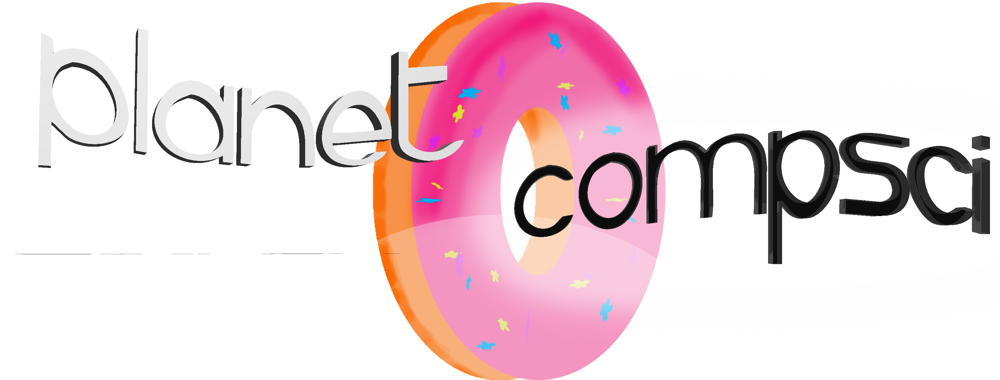
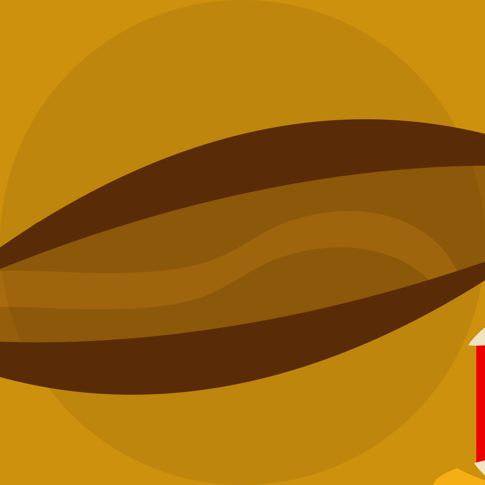
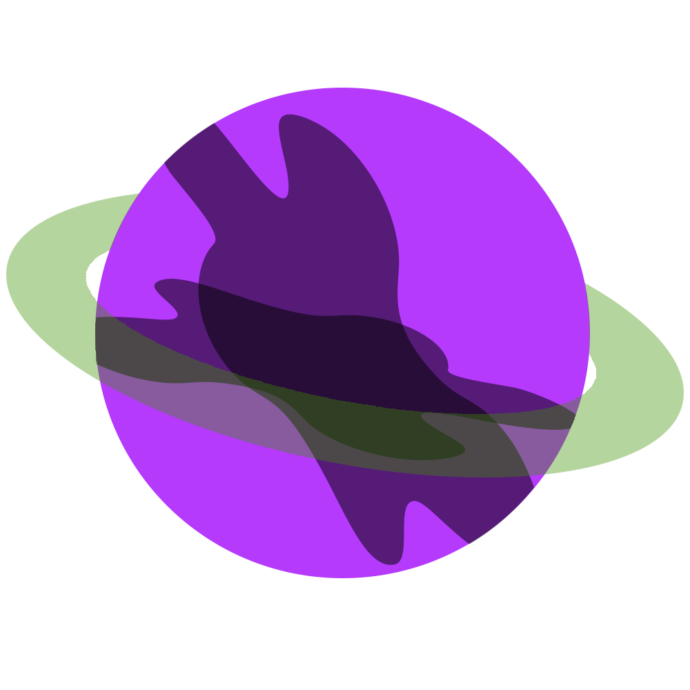

The vast majority of the ways in which we teach and learn have been touched by the hands of computer science. Think about the classrooms that have ditched old chalkboards and whiteboards for a more modern approach, one that is centered around technology and forward-thinking. The Internet allows us to answer all of our questions and more, in just milliseconds from us requesting the information. We live in an era that breaks records every day; never before in history has information been available this freely.
E-learning classes are allowing more and more people to have access to a higher level of education than would ever be available to them, which is all thanks to the developments in computer science. We have new tools at our disposal, which enable us to learn in ways that weren't possible even just ten years ago. Sharing information with our peers has never been easier - with the introduction of 'cloud' storage spaces, we can upload all kinds of information freely whenever we like, and allow others to access it whenever they like.
The Enigma cipher was a polyalphabetic cipher, meaning the same letter isn't always enciphered as the same letter, which was used by the Germans before and during World War II. You could encipher and decipher a message using an Enigma machine with the key to encipher and decipher being the order of the rotors, starting positions of the rotors, and the connection of the plugs on the plugboard.
At the end of World War I, the Polish were bordering two hostile nations: Russia and Germany, so they needed to know what they were up to. The Germans used the Enigma cipher to encrypt their messages. The Polish Cipher Bureau were able to determine the rotor settings of the Enigma machine for a set of messages using a time consuming mathematical method that had to be carried out for each of the possible rotor positions, since there were three rotors you could position them in six different ways. The Polish mathematician Marian Rejewski invented an electro-mechanical device that was called the bomba which would do all the heavy lifting; six were constructed, one for each rotor position permutation. Come 1938, the world is on the brink of war and Germany decides to up the security of the Enigma machine and add two new rotors that can be placed in the three rotor slots so there are now 60 permutations of the rotors. The Polish Cipher Bureau can’t commission another 54 bomba and in 1939 Poland was invaded by Germany, luckily, they passed their knowledge and methods to the allied forces.
In 1939 the British bombe was designed by Alan Turing which was installed in 1940. This new electro-mechanical device could be used to find the rotor order and starting positions thus providing the British with the daily key which could be used to decipher the Germans’ communications. The British being able to decipher the Germans’ messages prematurely ended the war saving millions of lives, so the bombe in effect ended the war and was the birth of modern computing.